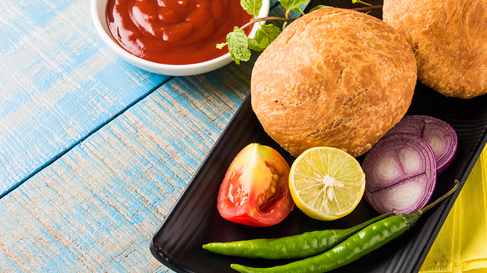
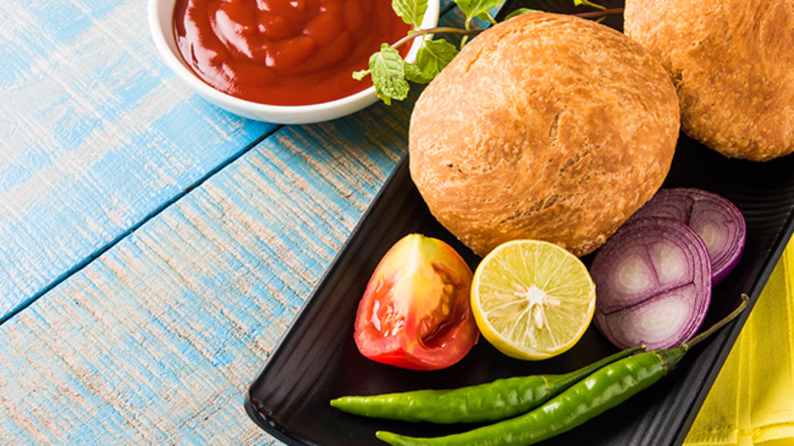

Beauty Of Kachori
One of the most loved Indian snacks, Dal kachori is absolutely sensational. Kachoris are deep fried breads made with ground dal sauteed along with spices and filled into a cover of maida and baking powder. This is the most popular road side snack that you'll find across north India, specially parts of Rajasthan.

 
